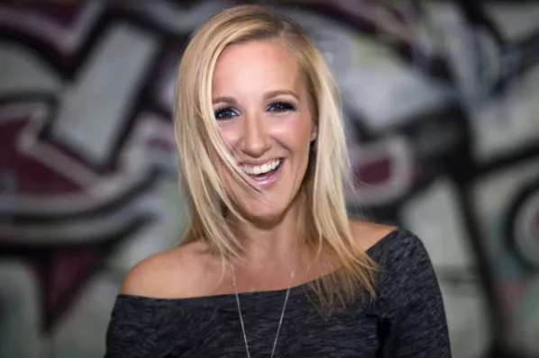
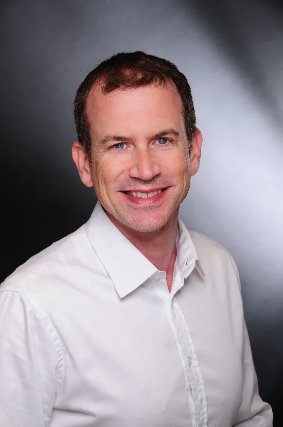
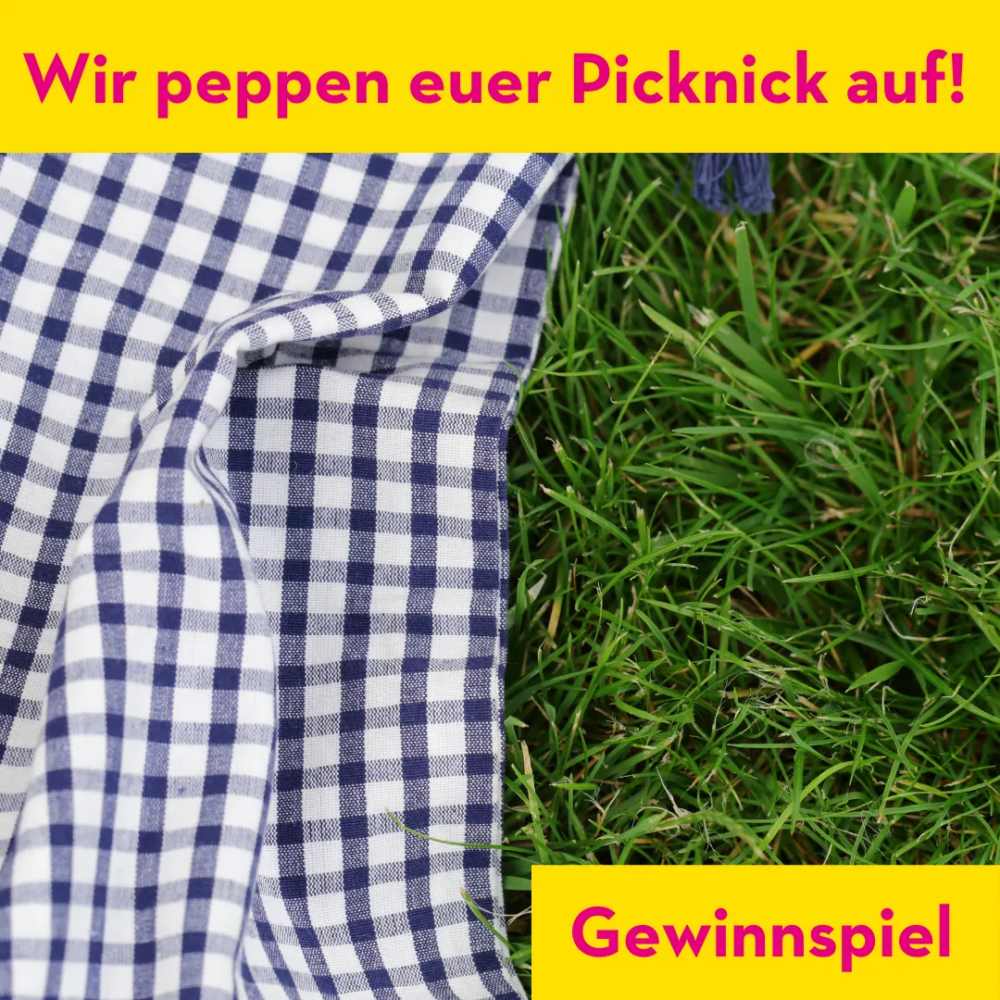
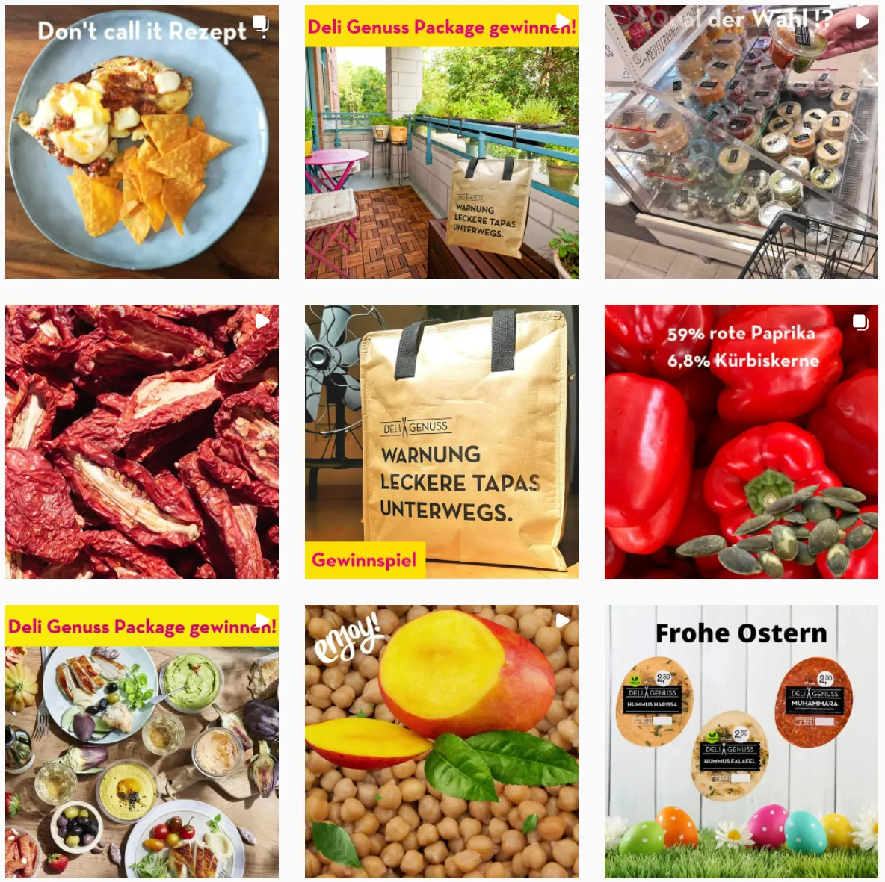
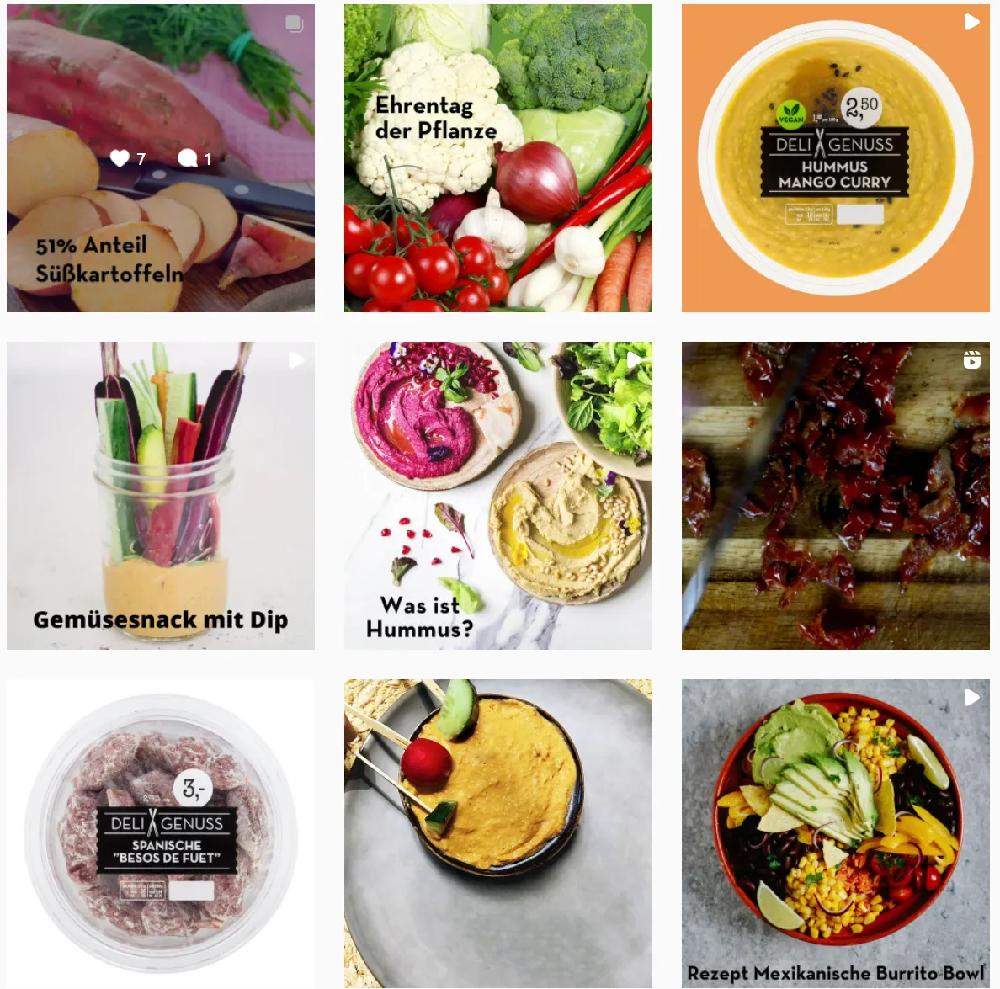
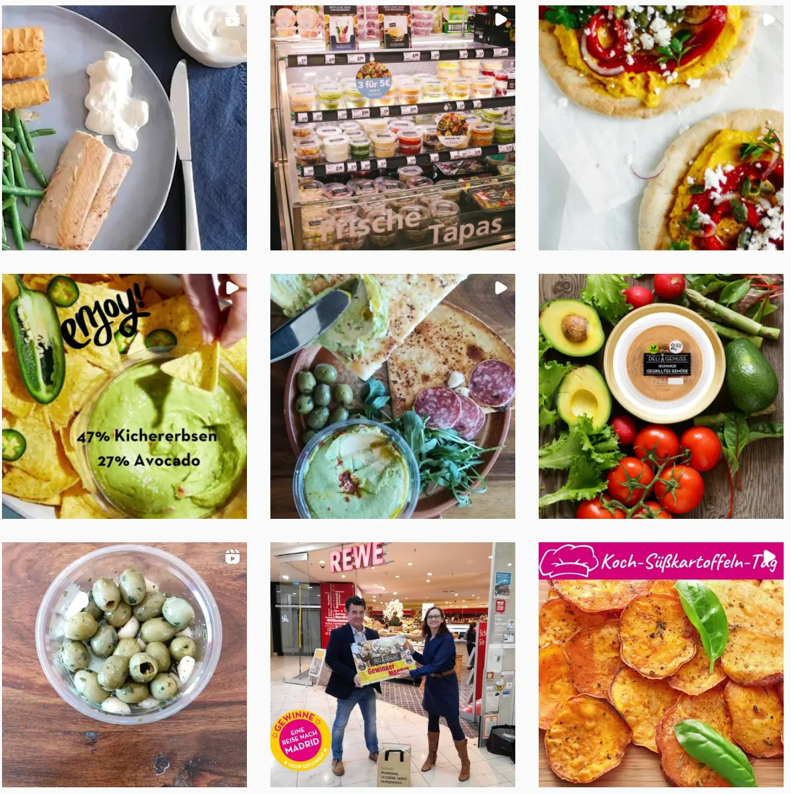

Frank Linke
Kamera, Schnitt, Messeberichterstattung
- Mediengestalter, Kameramann, Videoeditor
- Hat die Messeberichterstattung für die Messe Düsseldorf etabliert
- Kongress-Know-how, HD/3D/4K, 360°
Pitch für die Messe Düsseldorf
Video, Foto, Text und Blog für Website und Social Media. Von Menschen, die die Messe Düsseldorf kennen.
Weiter mit →, Klick oder Wischen
01 · Unser Know-how
Alles aus einer Hand, für Website, Newsletter und Social Media.
HD, 4K, 3D und 360°. Hochformat 9:16 und quadratisch 1:1.
Messe-Reportage, Porträts und Testimonials.
Interviews, Branchennews und Pflege im Messe-CMS, auf Deutsch und Englisch.
Geschichten, die Besucher und Aussteller gern lesen.
02 · Ihr Team
Kamera, Schnitt, Messeberichterstattung

Moderation, Redaktion, Englisch

Strategie, Social Media, KPIs

Moderation, PR-Redaktion, Messe-CMS
03 · Team-Support
Bei großen Produktionen verstärken uns Crews, die für Sender und Unternehmen arbeiten.
Für Sender wie KiKA, ZDF, ARTE, WDR und RTL. Von weltweitem Motorsport über Dschungelcamp bis zu tagesaktuellen Beiträgen und Reportagen.
Für öffentlich-rechtliche und private Sender sowie PR für Unternehmen.
360-Grad-Videos für YouTube und Facebook, Hochformat-Clips und quadratische Formate für Instagram.
04 · Tempo & Qualität
Interviews in 3 Messetagen, als Video und als Foto-Text oder Testimonial
Social-Media-Clips zusätzlich in derselben Zeit
Etablierte Korrekturschleifen, optisch wie inhaltlich, in beiden Sprachen
Flexibel statt starr: Wir reagieren auf Social-Media-Reaktionen und Änderungen im Messe-CMS ohne feste Arbeitszeiten.
05 · Ganzjährige Betreuung
Der Messekalender gibt den Takt vor (Quelle: messe-duesseldorf.de, Stand November 2026)
06 · Beispiele unserer Arbeit
07 · Wirkung messbar machen
18.11.–15.02. 16.02.–15.05.2022 · Beispielkunde Deli Genuss, rein organisch, ohne bezahlte Anzeigen.
08 · Organischer Content
Gewinnspiele, Rezepte und Produktgeschichten: Beispiele aus unserer Betreuung.






09 · Ihre Vorteile
Festes Team, das die Messe kennt: weniger Aufwand.
Professionelle Umsetzung auch kurzfristig.
Website, Newsletter und Social Media aus einer Hand.
Planung, Erstellung, Archiv, Wiederverwertung, Auswertung.
Weniger Mehrfachproduktion, mehr Reichweite pro Inhalt.
Deutsch und Englisch, sprachlich und inhaltlich geprüft.
Hohe Identifikation mit der Messe Düsseldorf.
Wir entwickeln Formate gemeinsam weiter.
Konstante Community-Betreuung stärkt das Image.
Next Step
Lassen Sie uns gemeinsam planen, wie die nächsten Messen erzählt werden.
© Frank Linke, Gesa Gröning, Emily Whigham, Johannes Röder